Exercise Tips
1.YOGA
i. Low back & glute stretch
The benefit: This move can help alleviate some of the tightness that may develop in your muscles from period cramping and bloating. Here, you’ll open up the outer hips, ribs, abdominals, and back.
The move: Start with the left foot flat, and right foot directly back from the hip at 6 o’clock. Plant the ball of the back foot like you’re wearing a stiletto heel and slightly bend the front knee. The left arm is going to reach straight out at shoulder height while the right arm reaches overhead. Sway the hips to the right as you reach up and out with the right hand. Repeat 6-8 times on both sides.
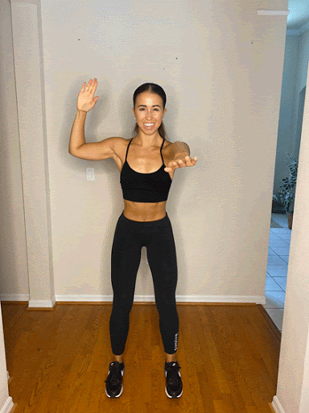
ii. Kneeling abdominal twist
The benefit: Hip and pelvic opening stretches can feel great when you are feeling tightness and fullness in this area, which can occur if you experience heavy bleeding, cramping, or PMS.
The move:Kneel on the left leg with the right foot planted at 3 o’clock, externally rotated. Interlace the fingers at chest height, lift elbows, and pull the fingers apart to engage the back. Shift your weight into the right foot, finding a deeper bend in the right knee as you drive the left elbow toward the left and twist. Return to center by engaging the glute and driving the right elbow back to square the shoulders forward. Repeat 6-8 times on both sides.
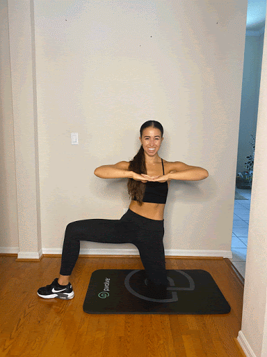
iii. Shift back arm rotation
The benefit: Ribs and abdominals can feel restricted as a result of bloating or abdominal cramping or pain. This move opens these areas to improve blood flow and help alleviate symptoms.
The move:This is a 4-part move targeting the middle spine and hips. On all 4’s, shift your weight back toward the heels, finding a deep hip hinge and engaging the glutes to return to center. Then, lift the right hand toward the ceiling and open your chest toward the right. Return to center and repeat the shift, alternating the arm lift and spinal rotation to the left side.
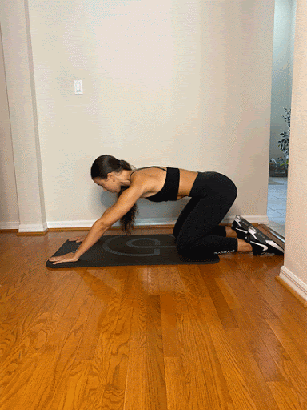
iv. Glute bridge
The benefit: Bridging puts your body in a relatively inverted position. This can encourage blood flow away from the pelvis and lower abdomen where we feel pressure and fullness. It unweights the pelvic floor and can help reduce cramping and collected inflammation in the area. This is a gentle inversion that's only held for a short time - however, we always recommend you listen to your body and if this move is uncomfortable during your period you can always skip it.
The move:Lying down, bend the knees so both feet are planted flat on the floor about 6 inches from the glutes. Reach your fingertips toward your heels, engaging the upper back and opening the chest. Press into the feet and hover the pelvis 1-2 inches above your mat. Engage the glutes and press the pelvis toward the ceiling to find full range in the front of the hips and return to that hover. Repeat for 8-10 reps.
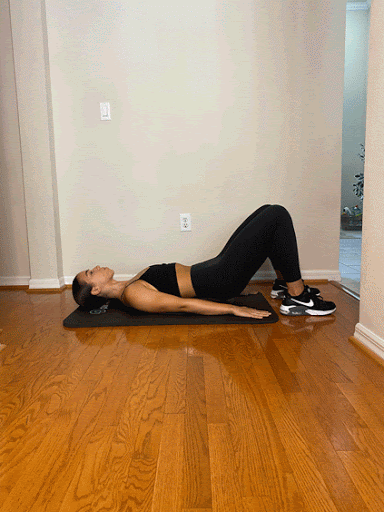
For more please click the link given below
Click Here
2.STRECHES
i.Cat-Cow
Step 1 :
Starting Position:
Kneel on an exercise mat or floor, positioning your knees and feet hip-width apart, with your feet dorsi-flexed (toes pointing towards your body).
Step 2 :
Slowly lean forward to place your hands on the mat, positioning them directly under your shoulders at shoulder-width with your hands facing forward. Reposition your hands and knees as necessary so that your knees are directly under your hips and hands are directly under your shoulders.
Step 3 :
Gently stiffen your core and abdominal muscles to position your spine in a neutral position, avoiding any sagging or arching.
Step 4 :
Upward (Cat) Phase:
Gently exhale and contract your abdominal muscles, pushing your spine upwards towards the ceiling and hold this position for 10 - 15 seconds. Allow your head to fall towards your chest, maintaining alignment with the spine.
Step 5
Downward (Cow) Phase:
Slowly relax and yield to the effects of gravity. Let your stomach fall towards the floor (increasing the arch in your low back) and allow your shoulder blades to fall together (move towards the spine). Hold this position for 10 - 15 seconds before returning to your starting position.
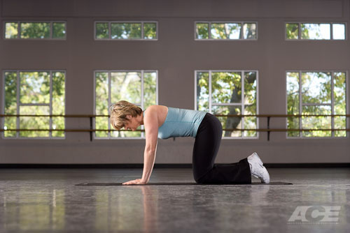
ii.Relaxation
Restorative yoga is a gentle form of yoga that involves holding positions for longer periods of time. This type of yoga uses props to support the body during passive stretches. Most positions are seated, supine or prone, which reinforces a relaxed state and helps reduce stress.
Complete these poses while using traditional yoga props or with the use of pillows and blankets. Hold each pose for at least two to three minutes for the most benefit. You can ease into the pose with several deep breaths. Once in the pose, allow the breath to come back to a steady state.
Janushirasana (Head-to-Knee Pose)
Focus:
Lengthens the posterior leg.
How to Perform:
Sit on the floor with the legs extended. Bend the left knee and place the left foot next to the right inner thigh. Place a block or folded blanket on the left side of the right knee. Fold forward from the pelvis and rest the head on the block or blanket. Place the hands on the floor on top of the props.
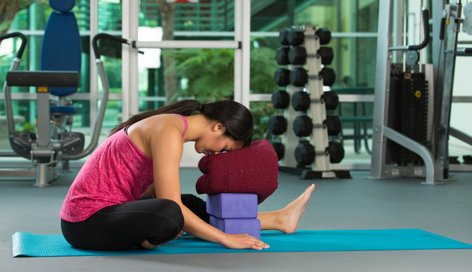
Upavistha Konasana – Seated Wide-legged Straddle
Focus:
Lengthens the posterior leg and inner thigh.
How to Perform:
Sit on the floor with legs extended. Place the legs into a “V” position. Place the block or folded blanket between the legs. Fold forward from the pelvis and rest your head or hands on the prop.
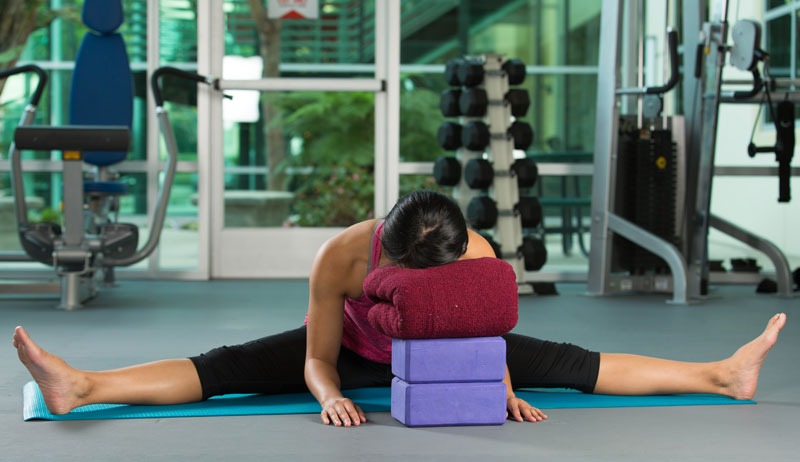
Supta Baddha Konasana (Supine Butterfly)
Focus:
Lengthens the inner thigh and opens chest.
How to Perform:
Sit on the floor with feet on the floor and place two pillows or folded blankets on the outside of each leg. Recline back onto a pillow to support the head and spine. Allow the knees to drop to each side and place the soles of the feet together. Relax the legs onto the prop and keep the arms by your sides.
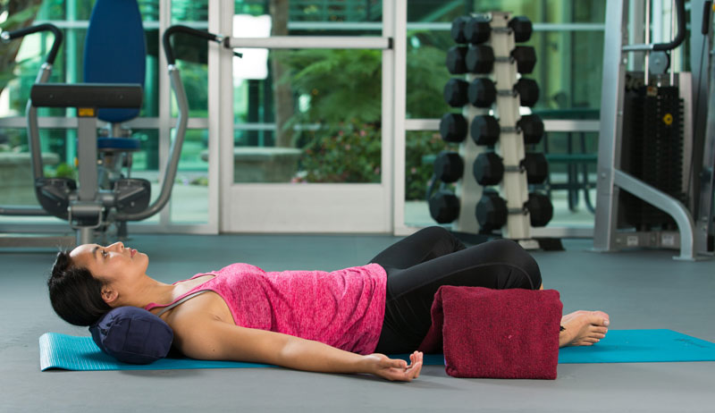
Supta Matsyendrasana – (Reclined Spinal Twist)
Focus:
Opens the thoracic spine and abductors
How to Perform:
Lie on the floor or on top of a pillow for upper back and head support. Place a pillow on the left side of the legs. With the feet on the floor, lower the legs onto the pillow and extend the arms on the floor at shoulder height. Hold and switch to the opposite side.
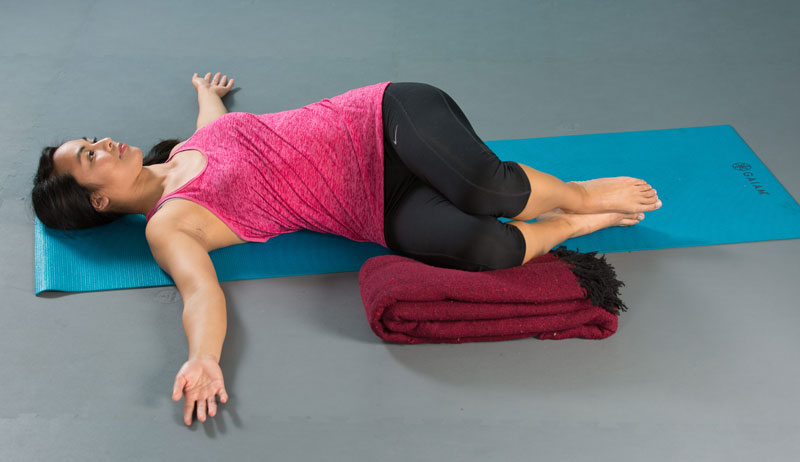
Savasana (Corpse Pose)
Focus:
Promotes relaxation
How to Perform:
Lie on the floor or on top of pillows to support the upper back and head. You can place a blanket on top of your body. Let the arms relax by your sides and breathe normally. Stay in the pose between five to 10 minutes.
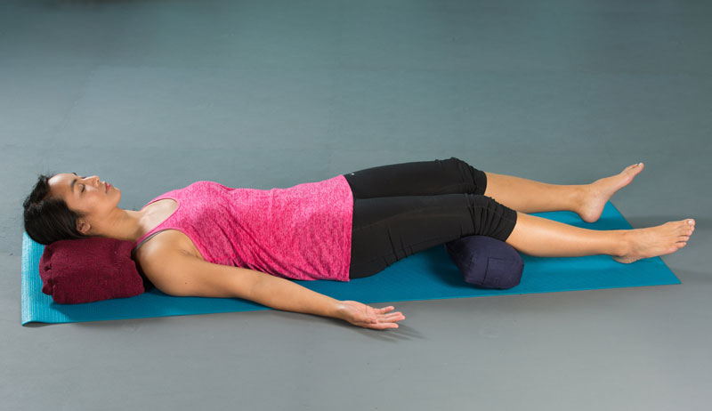
iii.Glute Bridge Exercise
Step 1
Starting Position:
Lie supine (on your back) on an exercise mat or the floor in a bent-knee position with your feet flat on the floor. Place your feet hip-width apart with the toes facing away from you. Gently contract your abdominal muscles to flatten your low back into the floor. Attempt to maintain this gentle muscle contraction throughout the exercise
Step 2
Upward Phase:
Gently exhale while holding your abdominal contraction and press your hips upwards off the floor into extension by contracting your glutes (butt muscles). At the same time press your heels into the floor for more stability. Avoid pushing your hips too high as this generally increases the amount of hyperextension (arching) in your low back. Maintaining your abdominal contraction helps avoid excessive arching in your low back.
Step 3
Lowering Phase:
Inhale and slowly lower yourself back towards your starting position.
Step 4
Progression:
Gradually progress this exercise by starting with both feet together and extending one leg while in the raised position.
Avoid arching your lower back as your press your hips upward which normally occurs if your attempt to push your hips as high as possible. This can be achieved by contracting your abdominal muscles prior to lifting, and keeping them engaged throughout the lift.
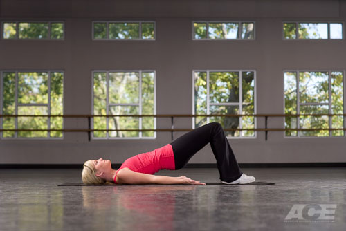
For more please click the link given below
Click Here
3.Meditation
While meditation isn’t a cure-all, it can certainly provide some much-needed space in your life. Sometimes, that’s all we need to make better choices for ourselves, our families, and our communities. And the most important tools you can bring with you to your meditation practice are a little patience, some kindness for yourself, and a comfortable place to sit.
When we meditate, we inject far-reaching and long-lasting benefits into our lives. And bonus: you don’t need any extra gear or an expensive membership.
Here are five reasons to meditate:
1.Understanding your pain
2.Lower your stress
3.Connect better
4.Improve focus
5.Reduce brain chatter
How to Meditate:
Meditation is simpler (and harder) than most people think. Read these steps, make sure you’re somewhere where you can relax into this process, set a timer, and give it a shot:
Take a seat
- Find place to sit that feels calm and quiet to you.
- Set a time limit
If you’re just beginning, it can help to choose a short time, such as five or 10 minutes.
- Notice your body
You can sit in a chair with your feet on the floor, you can sit loosely cross-legged, you can kneel—all are fine. Just make sure you are stable and in a position you can stay in for a while.
- Feel your breath
Follow the sensation of your breath as it goes in and as it goes out.
- Notice when your mind has wandered
Inevitably, your attention will leave the breath and wander to other places. When you get around to noticing that your mind has wandered—in a few seconds, a minute, five minutes—simply return your attention to the breath.
- Be kind to your wandering mind
Don’t judge yourself or obsess over the content of the thoughts you find yourself lost in. Just come back.
- Close with kindness
When you’re ready, gently lift your gaze (if your eyes are closed, open them). Take a moment and notice any sounds in the environment. Notice how your body feels right now. Notice your thoughts and emotions.
- -That’s it! That’s the practice. You focus your attention, your mind wanders, you bring it back, and you try to do it as kindly as possible (as many times as you need to).

Meditation Tips and Techniques
We’ve gone over the basic breath meditation so far, but there are other mindfulness techniques that use different focal points than the breath to anchor our attention—external objects like a sound in the room, or something broader, such as noticing spontaneous things that come into your awareness during an aimless wandering practice. But all of these practices have one thing in common: We notice that our minds ARE running the show a lot of the time. It’s true. We think thoughts, typically, and then we act.
For more please click the link given below
Click Here